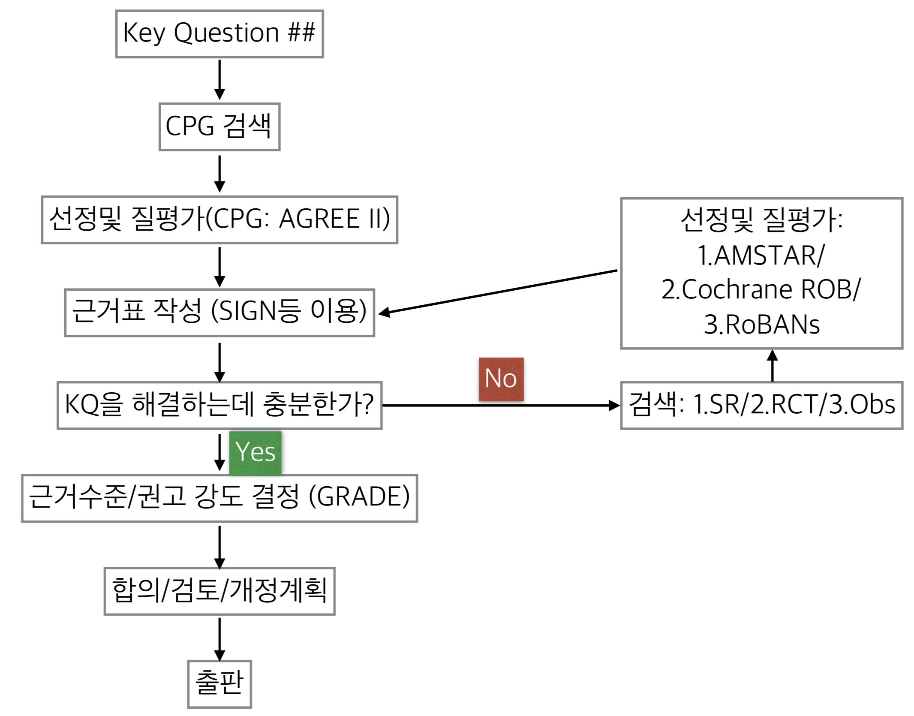

G 지침및 근거검색

G.1 지침검색
- National guideline clearinghouse
- Guideline international network
- Pubmed
- Google search
- KoMGI
- KoreaMed - KMBASE
G.2 근거검색
전자문헌검색:
-상기 + Ovid DB(MEDLINE/EMBASE) Cochrane library
수기검색 (gray literature)
G.3 핵심질문별 근거 평가자
Episodic migraine환자에서 예방치료를 고려해야 하는 요인들(두통빈도, 두 통강도, 환자의 선호도, ADL에 대한 영향 등)은 무엇인가?
- 김병수
예방치료를 진행중인 episodic migraine환자에서 치료의 중단은 어떻게 결 정해야 하는가?
- 서종근
Episodic migraine환자에서 예방치료로 베타차단제(beta blocker: propranolol 등)를 사용하는 것이 타약제, 위약 또는 치료하지 않는 것에 비해 두통의 완화에 효과적인가?
- 손종희
Episodic migraine환자에서 예방치료로 칼슘채널차단제(calcium channel blocker: flunarizine 등)를 사용하는 것이 타약제, 위약 또는 치료하지 않는 것에 비해 두통의 완화에 효과적인가?
- 송태진
Episodic migraine환자에서 예방치료로 안지오텐신전환효소억제제(angiotensin converting enzyme inhibitor)나 안지오텐신수용체차단제(angiotensin receptor blocker: candesartan 등)를 사용하는 것이 타약제, 위약 또는 치료 하지 않는 것에 비해 두통의 완화에 효과적인가?
- 이미지
Episodic migraine환자에서 예방치료로 항우울제(anti-depressant: amitryptiline 등)를 사용하는 것이 타약제, 위약 또는 치료하지 않는 것에 비해 두통의 완화에 효과적인가?
- 정필욱
Episodic migraine환자에서 예방치료로 항경련제(anti-epileptic agent: divalproex sodium, sodium valproate, topiramate 등)를 사용하는 것이 타약제, 위약 또는 치료하지 않는 것에 비해 두통의 완화에 효과적인가?
- 최윤주